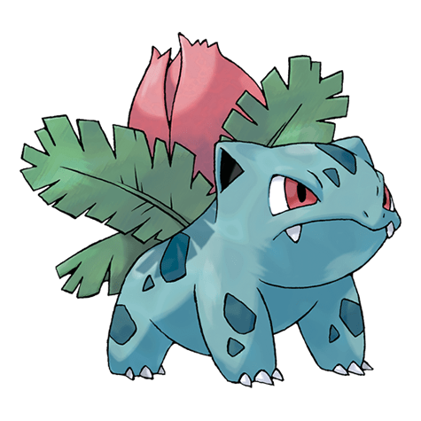
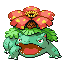

Назад
Ивизавр

Ивизавр — Покемон 1 поколения под номером 2 в Покедекс. Обитает он в регионе Канто и относится к Травяному и Ядовитому типу. На спине Ивизавра есть бутон. У этого Покемона мощные ноги и сильный торс, чтобы поддерживать его вес. Если он вдруг проводит больше времени на солнце, это признак того, что бутон скоро превратится в большой цветок.
Тип:
Травяной
Ядовитый
Эволюция
# 002 Ивизавр
=>

# 003 Венузавр